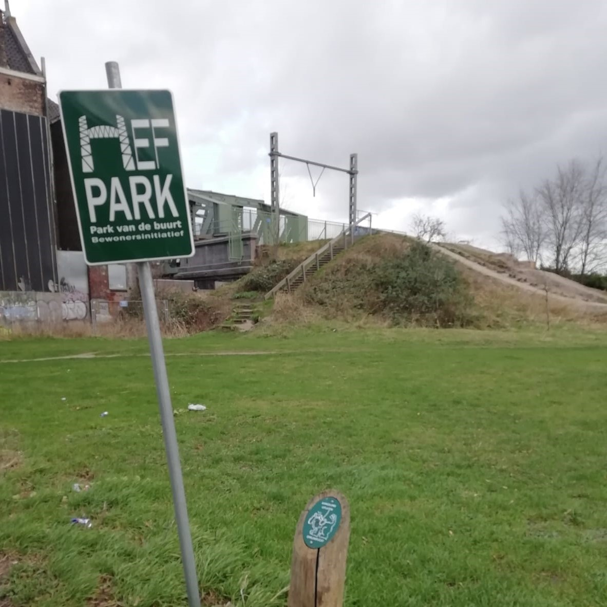
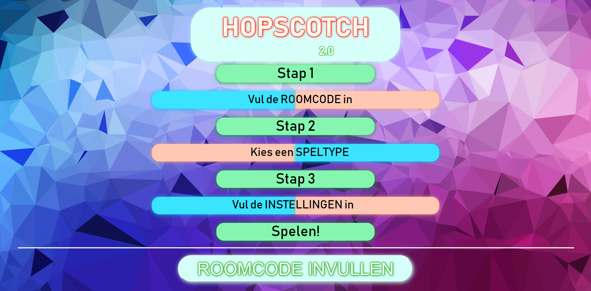
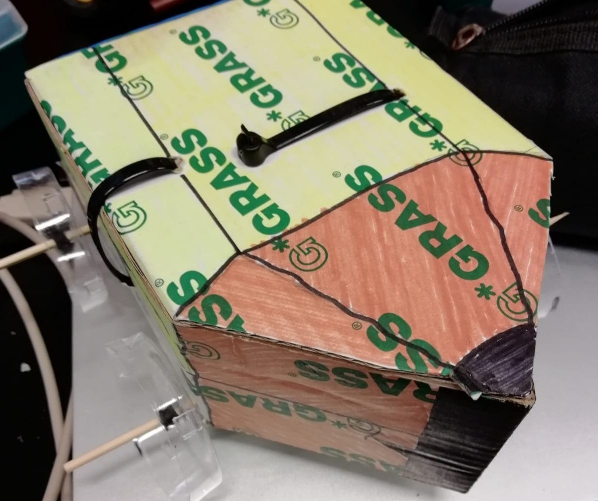
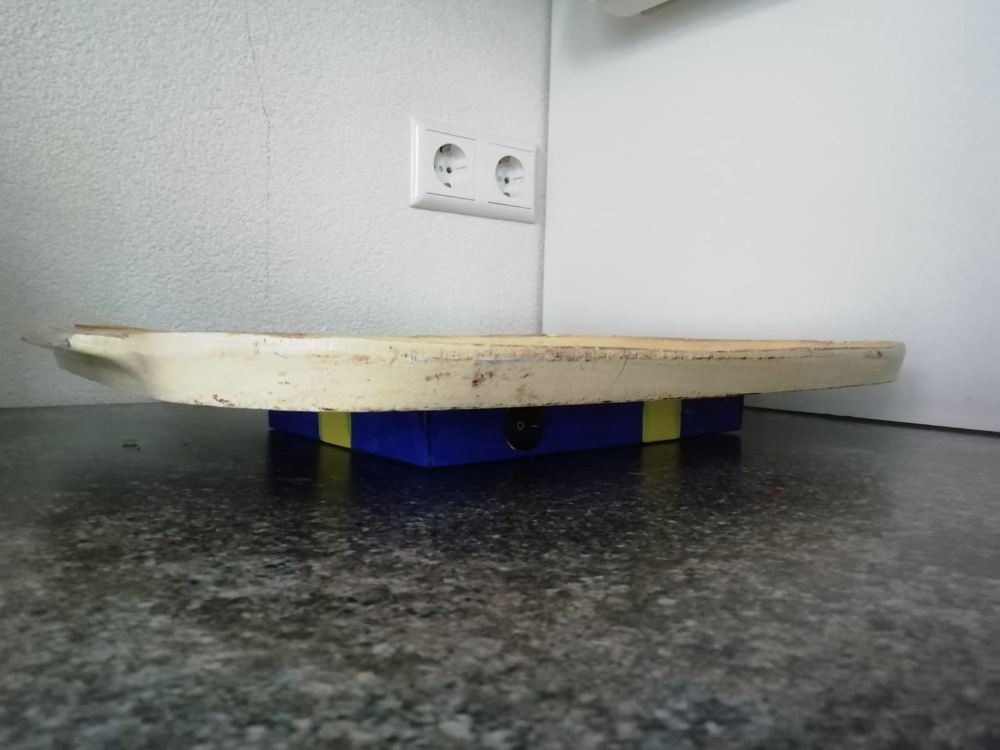

Hey, my name is Niek Rottier.
Currently I'm a first year Creative Media and Game Technologies student at Hogeschool Rotterdam.
Here I learn how to code, do user research and create innovative products.
This site will show you what I've made and am currently working on to give you a better understanding of what I can do.
Hopscotch 2.0 is a project based in Hefpark - Rotterdam. This park was assign to our team by the school. The goal was to improve the park, so we got to work. After a whole bunch of concepts we made Hopscotch 2.0. The game includes a site and hardware. The game has different gamemodes and difficulties but all of them make use of tiles that can light up and detect when they are stepped on.
 This information can be passed on to the site to keep track of scores and player turns. I did a lot of work on the site. Left can you see the homepage of the Hopscotch 2.0 site. We had a lot of fun making it, although we couldn't complete it in time.
The Smart Pushy Objects projects where the first assignments I got at Hogeschool Rotterdam. First we had to make a Pushy Object. You needed to use the Circuit Playground Express to make a little robot or car to push the other out of a ring. I made "Kickstart", a little riding pencil in need of a kickstart.
 
Next up we needed to make a smart object. Here I made "TrayCounter" for the restaurant at Ikea.
This object gave a signal whenever the last tray was picked up. It used a lightsensor to detect this and it was properly styled.
The last assignment was to use everything we learned to make a smart pushy object.
As team 12 we build the T-12, a tank ready for a fight.
It ended up moving only slightly and we did not win, but we learned a lot. This series of projects was a great
kickoff to the year.
The assignment was to build a system to make reservations or plan appointments.
I made a system for Rottier Maatwerk Meubels (RM2), a one-man custom furniture (and more) business.
The system is a site, coded with HTML/CSS, JavaScript and PHP. On the site you have a calender and can make appointments.
The admin can view the appointments and accept or decline them.
This was my first time working with PHP so I had to learn it from nothing.
And even though there still were a whole bunch of flaws, I was quite happy with the product.
You can find me on Instagram,
StackOverflow and
GitHub.
Shoot me a message if you want to discuss something with me!